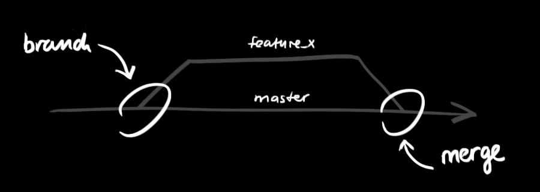

git - Guida Italiana Tascabile
Una piccola guida per iniziare con git. Niente di complicato ;)
Home
Creazione di un nuovo repository su GitHub
-
Vai su GitHub e accedi al tuo account.
-
Una volta loggato, clicca sul pulsante New (in alto a destra) per creare un nuovo repository.
-
Dai un nome al tuo repository con un nome-del-progetto
-
Seleziona se il repository sarà Pubblico o Privato:
- Pubblico: Il repository sarà visibile a tutti. Chiunque può vedere il tuo codice, ma solo tu (o i collaboratori che aggiungi) puoi modificarlo.
- Privato: Il repository sarà visibile solo a te e alle persone a cui concedi l'accesso.
-
Puoi opzionalmente aggiungere un file
README.md per descrivere il tuo progetto e un file .gitignore per escludere determinati file dal repository.
-
Clicca su Create repository.
Una volta creato il repository, puoi clonarlo localmente sul tuo computer usando il seguente comando:
git clone https://github.com/tuo-username/nome-del-progetto.git
Ora hai una copia locale del repository su cui puoi iniziare a lavorare.
Ambiente di lavoro
La tua copia locale del repository è composta da tre "alberi" mantenuti da Git.
Il primo è la tua Directory di lavoro che contiene i file attuali.
Il secondo è l'Index, che fa da spazio di transito per i file.
E per finire, l'HEAD che punta all'ultimo commit fatto.

Aggiungere & Validare
Puoi proporre modifiche (aggiungendole all' Index) usando
git add <nomedelfile>
git add *
Per validare queste modifiche usa
git commit -m "Messaggio descrittivo con le modifiche fatte"
Branching
I branch sono utilizzati per sviluppare feature isolate.
Il branch main è quello di default quando crei un repository.
Puoi usare altri branch per lo sviluppo ed infine incorporarli ('merge') nel master branch una volta completati.

Crea un nuovo branch chiamato "feature_x" e passa al nuovo branch usando
git checkout -b feature_x